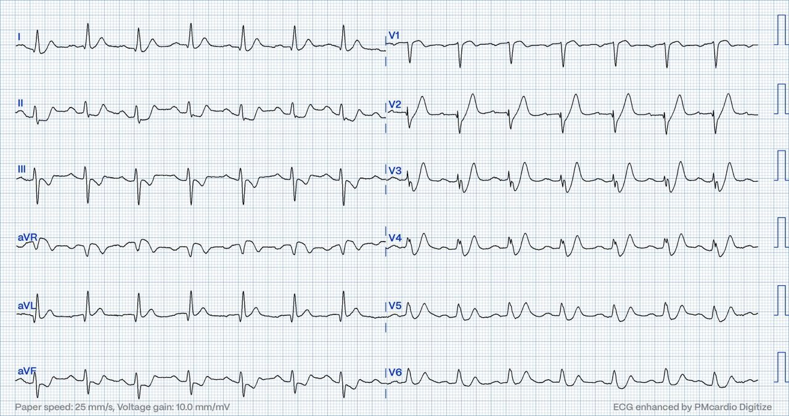
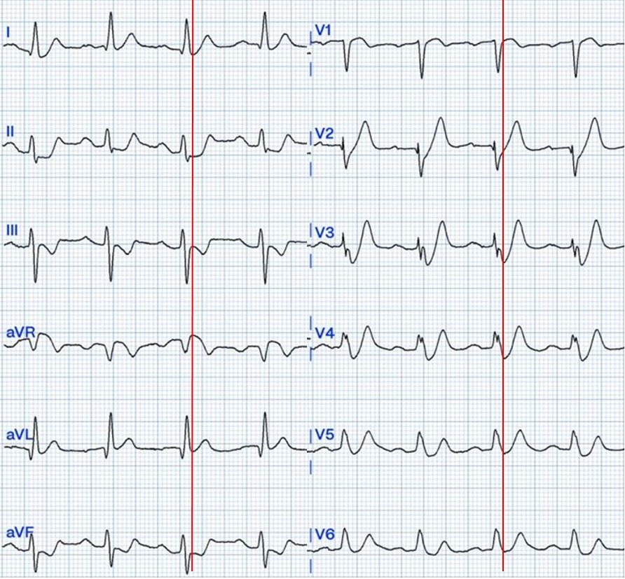
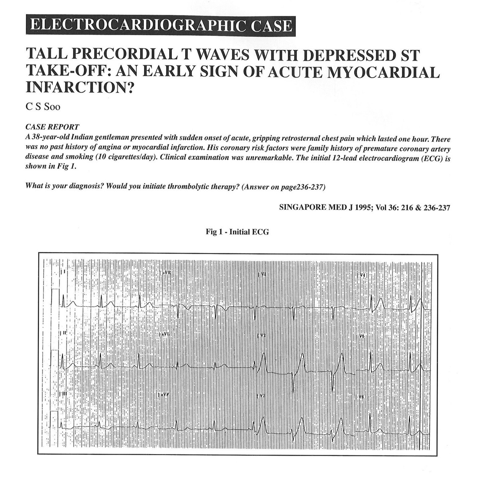
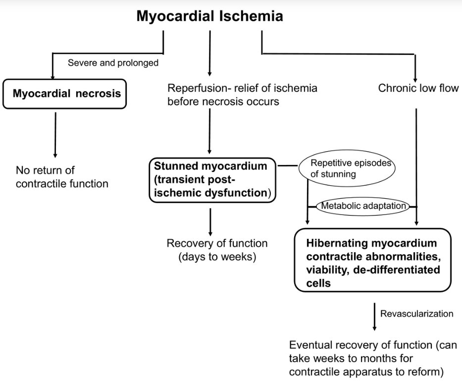
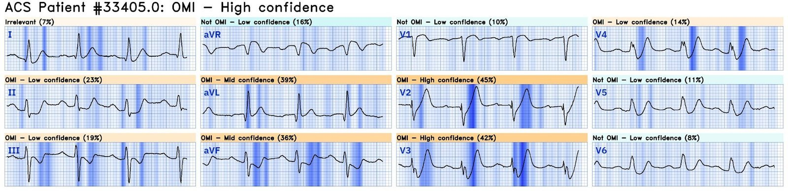
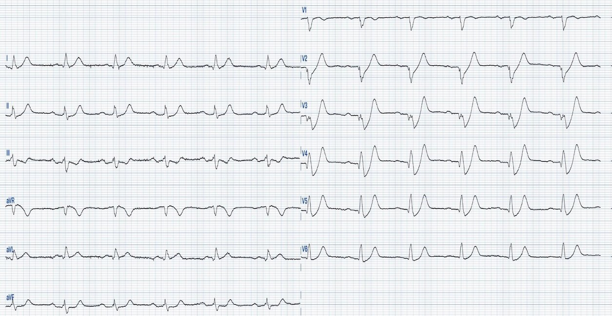
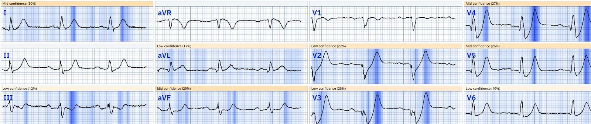
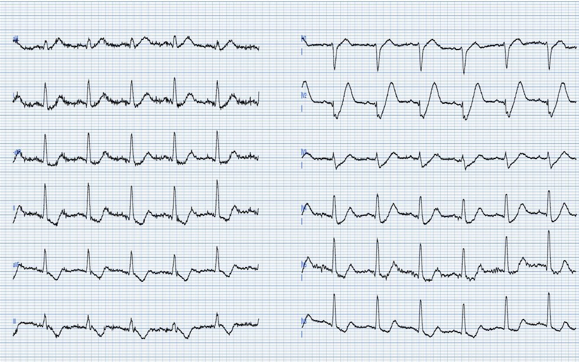
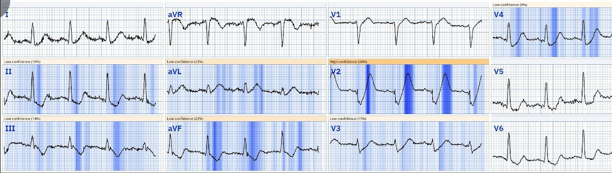
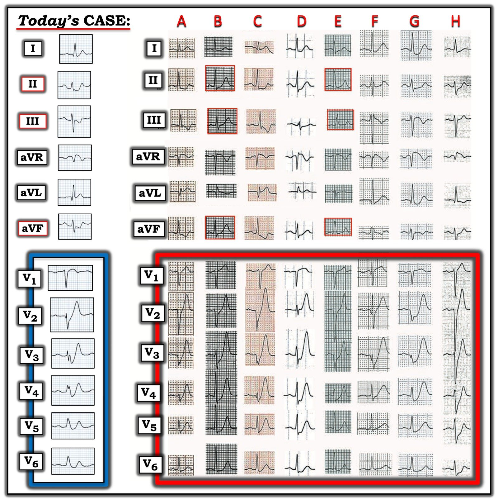

31/01/2025 — Thêm một điện tâm đồ PHẢI biết, và vì sao sự nổi tiếng của nó làm Dr. Smith khó chịu
Bản dịch tiếng Việt của bài "Another MUST know ECG, and why its notoriety annoys Dr. Smith" – Dr. Smith’s ECG Blog. Giữ nguyên toàn bộ 11 hình ảnh của bản gốc.
Tác giả: Magnus Nossen
Điện tâm đồ dưới đây được ghi ở một người đàn ông khoảng 50 tuổi có tiền sử tăng huyết áp và hút thuốc lá. Bệnh nhân đã gọi dịch vụ cấp cứu sau khi đột ngột đau ngực và vã mồ hôi, bắt đầu từ 20 phút trước. Điện tâm đồ dưới đây được ghi tại hiện trường.
Nguyên nhân của các thay đổi điện tâm đồ ở đây là gì? Bạn sẽ xử trí bệnh nhân này như thế nào?


Điện tâm đồ cho thấy nhịp xoang với phức bộ QRS hẹp. Trục mặt phẳng trán khoảng 0 độ. Tần số tim 85 nhịp/phút. Có các thay đổi đoạn ST và sóng T đáng kể và lan rộng. Đoạn ST ở chuyển đạo V1 có dạng lồi lên trên. Khắp các chuyển đạo trước tim (V2-V6) có ST chênh xuống, tiếp theo là các sóng T to, đầy đặn, tối cấp.
- Hình ảnh điện tâm đồ này được de Winter và cs. mô tả năm 2008 và được đặt theo tên tác giả chính. Hình ảnh điện tâm đồ de Winter (đôi khi gọi là hình ảnh sóng T de Winter) gồm đoạn ST chênh xuống dốc lên tại điểm J từ 1 đến 3 mm ở các chuyển đạo V1 đến V6, kèm các sóng T cao, to đầy đặn hay “tối cấp”.
Hình ảnh điện tâm đồ de Winter là một biểu hiện ít gặp, được báo cáo xảy ra ở 2% đến 3.4% bệnh nhân nhồi máu cơ tim thành trước (1). Dưới đây tôi đã đánh dấu điểm J trên các chuyển đạo chi và các chuyển đạo trước tim, cho thấy ST chênh xuống dốc lên ở các chuyển đạo V2-V6. Cũng có hình ảnh sóng T de Winter ở chuyển đạo I.


Điện tâm đồ này có giá trị chẩn đoán tắc LAD đoạn gần. Hình ảnh điện tâm đồ này là ví dụ tôi yêu thích nhất cho thấy các tiêu chuẩn STEMI có khiếm khuyết căn bản như thế nào. Tôi được đưa điện tâm đồ này trong lúc đang chăm sóc một bệnh nhân OMI khác, và tôi lập tức nhận ra hình ảnh điện tâm đồ này và kích hoạt phòng thông tim. Nếu bạn đã từng thấy hình ảnh này một lần — chẩn đoán sẽ là hiển nhiên với bạn. Thời gian từ điện tâm đồ đến bóng rất ngắn, chỉ 35 phút. Khi thông tim có tắc 100% LAD đoạn gần, đã được mở thông và đặt stent.
- Bệnh nhân này đã được chăm sóc tối ưu. Troponin T đạt đỉnh 9378 ng/L. Siêu âm tim cho thấy giảm động vùng vách và mỏm, với phân suất tống máu thất trái 35-40%.
- Tình trạng giảm động là thoáng qua. Siêu âm tim 3 tháng sau nhồi máu cho thấy phân suất tống máu bình thường 55%, không còn giảm động rõ!
- Nhờ điều trị nhanh — rất nhiều cơ tim đã được cứu, và tình trạng giảm động ban đầu là do choáng cơ tim (myocardial stunning) (xem bên dưới). Troponin đỉnh có thể rất cao sau khi tái tưới máu nhanh.
_________________________________________
Smith: Đây là một ca kinh điển và được xử trí tốt, đúng như lẽ phải vậy. Tuy nhiên, tôi thấy khó chịu với sự chú ý dành cho sóng T de Winter, vì chúng chỉ là một thiểu số RẤT NHỎ trong số các sóng T tối cấp kín đáo do tắc LAD (LAD OMI). Chúng là loại dễ nhận ra nhất trong tất cả các sóng T tối cấp, nhờ đoạn khởi đầu ST bị chênh xuống. Điều đó có nghĩa là các sóng T tối cấp (HATW) khó nhận ra hơn thì không được nhận ra, và vì thế rất nhiều bệnh nhân bị bỏ qua! Hơn nữa, de Winter cho rằng hình thái này là “dai dẳng”. Thứ nhất, sóng T de Winter KHÔNG phải lúc nào cũng dai dẳng (thực tế, thường là không), nhưng quan trọng hơn, điều tương tự cũng đúng với sóng T tối cấp thông thường: chúng rất thường không tiến triển thành ST chênh lên. Chúng tôi có một loạt 20 ca tắc LAD với dòng chảy TIMI-0 đáp ứng tiêu chuẩn STEMI. 17 ca có HATW. Không ca nào tiến triển thành ST chênh lên. Đang được bình duyệt.
Xem tất cả các biểu hiện khác của HATW trong tắc LAD: Ten (10) Examples of Hyperacute T-waves in Lead V2 (a few in V3), due to acute LAD occlusion (Mười ví dụ về sóng T tối cấp ở chuyển đạo V2 (vài ví dụ ở V3) do tắc LAD cấp)
Ngoài ra, các sóng T tối cấp với đoạn khởi đầu ST chênh xuống này được Soo mô tả lần đầu năm 1995, nhưng ông ít được ghi nhận công lao về điều đó. De Winter không trích dẫn Soo. Tôi đã trích dẫn Soo 3 lần.
Soo CS. Tall precordial T waves with depressed ST take-off: an early sign of acute myocardial infarction? (Sóng T cao ở chuyển đạo trước tim với đoạn khởi đầu ST chênh xuống: một dấu hiệu sớm của nhồi máu cơ tim cấp?) Singapore Med J 1995;36(2):236–7.


CS Soo, Giảng viên và Bác sĩ Tim mạch, Khoa Nội, Universiti Malaya, Malaysia
____________________________________
Choáng cơ tim (myocardial stunning) là tình trạng rối loạn chức năng tim có thể xảy ra ở một vùng cơ tim không bị hoại tử, sau một đợt gián đoạn tưới máu ngắn. Tình trạng này thường xảy ra trong bối cảnh động mạch vành được tái tưới máu nhanh sau nhồi máu cơ tim. Trong tình huống này, ngay cả sau khi thiếu máu cục bộ đã được giải quyết và dòng máu cơ tim đã được khôi phục — chức năng co bóp của cơ tim vẫn suy giảm trong một khoảng thời gian thay đổi (thường từ vài ngày đến vài tuần).


Nếu bạn là người đọc thường xuyên của blog này — chẩn đoán này sẽ dễ dàng với bạn, và bạn sẽ xử trí đúng loại bệnh nhân này bằng tái thông mạch ngay lập tức. Đáng tiếc là, với những người thầy thuốc chưa quen với kiểu biểu hiện LAD OMI này — chẩn đoán nhiều khả năng sẽ bị chậm trễ, và điều trị thích hợp cũng vậy.
Học cách nhận ra các dấu hiệu điện tâm đồ phù hợp với OMI cần thời gian và luyện tập. Trí tuệ nhân tạo có thể hỗ trợ người thầy thuốc phát hiện những bệnh nhân cần tái thông mạch cấp cứu. Queen of Hearts đã không được dùng trong xử trí bệnh nhân hôm nay. Nếu mô hình AI này được dùng, nó sẽ xác định điện tâm đồ là OMI với độ tin cậy cao. Dưới đây bạn có thể xem kết quả đọc của QoH đối với điện tâm đồ ban đầu trong ca hôm nay.


============================================
Hai ví dụ bổ sung: Đọc điện tâm đồ là nhận dạng hình ảnh — và nhận dạng hình ảnh cần luyện tập, cả với con người lẫn các mô hình AI. Dưới đây tôi bổ sung điện tâm đồ của hai bệnh nhân khác. Cả hai ca dưới đây đều cho thấy hình ảnh điện tâm đồ de Winter điển hình như sách giáo khoa. Vốn được ghi với tốc độ giấy 50mm/giây — dưới đây các điện tâm đồ này được nén 50% theo trục X để “trông” như được ghi ở tốc độ 25mm/giây.


Điện tâm đồ ở trên là của một người đàn ông ở độ tuổi 80 bị đau ngực dữ dội như bị đè ép. Bệnh nhân này đã bị ngừng tim do rung thất (V-fib) ngay sau khi điện tâm đồ này được ghi. Đáng buồn là ông đã không thể hồi sức thành công. Điện tâm đồ này và kết cục của bệnh nhân là lời nhắc nhở vì sao việc nhận ra hình ảnh điện tâm đồ này lại quan trọng đến vậy.
- Dưới đây là biểu đồ giải thích của Queen of Hearts. Kết quả đọc tổng thể là OMI với độ tin cậy cao.


============================================
Ví dụ thứ 2 này là điện tâm đồ của một người đàn ông 50 tuổi đột ngột đau ngực điển hình. Đây là một ví dụ khác về hình ảnh điện tâm đồ de Winter. Khi thông tim có tắc gần hoàn toàn do huyết khối ở LAD đoạn gần với dòng chảy TIMI 2. Troponin T đỉnh 5933 ng/L.


Một lần nữa tôi bổ sung tính năng giải thích của QoH dưới đây. Kết quả đọc tổng thể là OMI với độ tin cậy cao.


============================================
Bàn luận: Hình ảnh điện tâm đồ de Winter gặp ở khoảng hai phần trăm bệnh nhân LAD OMI. Hình ảnh này chủ yếu được mô tả với LAD OMI, nhưng cũng đã được báo cáo ở các vùng chi phối mạch vành khác. Hình ảnh điện tâm đồ này gặp trong giai đoạn cấp của OMI và những bệnh nhân này cần được đưa ngay tới phòng thông tim, hoặc nếu không có sẵn PCI tiên phát thì cần được điều trị tiêu sợi huyết như một STEMI thông thường.
Trước đây người ta cho rằng hình ảnh điện tâm đồ de Winter biểu hiện các thay đổi điện tâm đồ khi có một dòng máu nhỏ giọt tối thiểu tới được vùng cơ tim phía hạ lưu. Tuy nhiên, nhiều bệnh nhân có hình ảnh điện tâm đồ de Winter có dòng chảy TIMI 0 khi chụp mạch, và hình ảnh điện tâm đồ này không nhất thiết tiến triển thành STEMI.
Xem trang này để biết thêm các ca điện tâm đồ có hình ảnh de Winter
Những điểm cần học:
- Hình ảnh điện tâm đồ de Winter có thể không thay đổi, không bao giờ tiến triển thành STEMI.
- Thời gian là cơ tim, và tái thông mạch kịp thời cải thiện kết cục của bệnh nhân.
- Thiếu máu cục bộ thoáng qua có thể dẫn đến “choáng”. Cơ tim bị choáng sẽ hồi phục chức năng sau một khoảng thời gian từ vài ngày đến vài tuần.
Tài liệu tham khảo:
Kloner, R. A. (2020). Stunned and hibernating myocardium: Where are we nearly 4 decades later? (Cơ tim choáng và cơ tim ngủ đông: chúng ta đang ở đâu sau gần 4 thập kỷ?) Journal of the American Heart Association
Vilela, E. M., & Braga, J. P. (2024, ngày 31 tháng Một). The de Winter ECG Pattern (Hình ảnh điện tâm đồ de Winter). StatPearls – NCBI Bookshelf
De Winter, R. J., Verouden, N. J. W., Wellens, H. J. J., & Wilde, A. a. M. (2008). A new ECG sign of proximal LAD occlusion (Một dấu hiệu điện tâm đồ mới của tắc LAD đoạn gần). New England Journal of Medicine..

============================================
BÌNH LUẬN CỦA TÔI, bởi KEN GRAUER, MD (26/1/2025):
============================================
“Có những bệnh nhân đọc sách giáo khoa. Có những người thì không”. Tôi đưa ra câu nói này như suy ngẫm của tôi về ca hôm nay. Người đàn ông khoảng 50 tuổi được BS. Nossen trình bày chắc chắn đã “đọc sách giáo khoa” về sóng T deWinter trên điện tâm đồ ban đầu của ca hôm nay.
Theo mô tả gốc của deWinter và cs. (N Engl J Med 359:2071-2073, 2008) — Có một “hình ảnh điện tâm đồ mới” không có ST chênh lên biểu thị tắc cấp tính đoạn gần động mạch vành LAD (động mạch liên thất trước — Left Anterior Descending).
- Các tác giả nhận thấy hình ảnh này ở ~2% bệnh nhân nhồi máu cơ tim thành trước cấp (tức là ở 30/1532 bệnh nhân được nghiên cứu). Thông tim xác nhận tắc LAD ở tất cả các ca — với ~50% bệnh nhân có LAD “vòng qua mỏm” (wraparound). Không có tắc thân chung động mạch vành trái.
- Đây là mô tả gốc của các tác giả về hình ảnh điện tâm đồ mới: “Thay vì ST chênh lên đặc trưng — đoạn ST cho thấy ST chênh xuống dốc lên 1-3 mm tại điểm J ở các chuyển đạo V1 đến V6 — nối tiếp vào các sóng T cao, dương, đối xứng”.
- Phức bộ QRS thường không giãn rộng (hoặc chỉ giãn rộng tối thiểu).
- Hầu hết bệnh nhân cũng có ST chênh lên 1-2 mm ở chuyển đạo aVR.
Trong bản thảo gốc năm 2008 — deWinter và cs. còn mô tả thêm các đặc điểm bổ sung sau:
- “Mặc dù sóng T cao, đối xứng đã được ghi nhận là một đặc điểm sớm thoáng qua, sẽ chuyển thành ST chênh lên rõ ở các chuyển đạo trước tim — ở nhóm bệnh nhân này, hình ảnh mới này là tĩnh, tồn tại từ lúc ghi điện tâm đồ thứ 1 cho đến điện tâm đồ trước thông tim.”
- Tăng kali máu không phải là yếu tố góp phần vào hình ảnh điện tâm đồ này (tức là nồng độ K+ huyết thanh lúc nhập viện của những bệnh nhân này bình thường).
LƯU Ý: Về mặt kỹ thuật — hình ảnh sóng T deWinter như deWinter và cs. mô tả năm 2008 khác với dấu hiệu đơn thuần là sóng T thành trước “tối cấp” — vì các dấu hiệu điện tâm đồ của hình ảnh sóng T deWinter theo định nghĩa chặt chẽ tồn tại trong một giờ hoặc lâu hơn, cho đến khi mạch LAD “thủ phạm” được tái tưới máu.
- Như gợi ý từ 8 điện tâm đồ ví dụ lấy từ bản thảo của deWinter (đánh nhãn từ A đến H, như trong Hình 1) — với hình ảnh deWinter theo định nghĩa chặt chẽ, cần có sự tham gia của cả 6 chuyển đạo ngực, với đa số chuyển đạo cho thấy ST chênh xuống tại điểm J dốc lên vài mm và các sóng T khổng lồ.


= = = = =
LƯU Ý: Tôi đã sửa trong Hình 1 một lỗi mà tôi tin là các tác giả đã mắc phải trong bản thảo gốc ( = Trong bản thảo gốc, chuyển đạo I và aVL của Bệnh nhân C bị đổi chỗ so với những gì tôi trình bày ở trên. Cách ghép 2 chuyển đạo đó như bản gốc sẽ tạo ra một trục mặt phẳng trán bất khả và một hình ảnh ST-T khó có thể xảy ra. Tôi tin rằng những gì trình bày ở trên trong Hình 1 của tôi giờ đã đúng).
Bệnh nhân hôm nay đã “đọc” sách giáo khoa …
- Điện tâm đồ ban đầu của bệnh nhân hôm nay biểu hiện rõ ràng hình ảnh sóng T deWinter điển hình “Không thể bỏ sót!” với ST chênh xuống dốc lên rõ tại điểm J — nối tiếp vào các sóng T cao, dương, đối xứng (thấy ở đây trên 5/6 chuyển đạo ngực — với ST chênh lên dạng vòm ở chuyển đạo ngực còn lại là V1).
- Và như thể muốn nói “Đừng có dám trì hoãn PCI của tôi!” — còn có hình ảnh “Không thể bỏ sót” của ST chênh xuống soi gương rõ rệt ở các chuyển đạo thành dưới.
ST chênh xuống ở chuyển đạo thành dưới có phải là một phần của sóng T deWinter?
Dù đã gặp rất nhiều ca thuộc thực thể này — tôi vẫn phải quay lại xem hình minh họa đại diện trong bản thảo gốc để trả lời câu hỏi này.
- TRẢ LỜI: Như trong Hình 1 — 6/8 điện tâm đồ đại diện trong bản thảo gốc biểu hiện ST chênh xuống soi gương ở các chuyển đạo thành dưới, đi kèm hình ảnh sóng T deWinter ở các chuyển đạo ngực.
- 2 điện tâm đồ đại diện không biểu hiện ST chênh xuống soi gương là của Bệnh nhân B và Bệnh nhân E. Ngược lại — sóng T trên điện tâm đồ của 2 bệnh nhân này dương nổi bật (có lẽ với một chút ST chênh xuống rất nhẹ ở vài chuyển đạo).
- Điều cốt lõi: Tuy thường gặp ST chênh xuống soi gương ở chuyển đạo thành dưới cùng với sóng T deWinter — đây không phải là dấu hiệu luôn luôn có.
Các nhận xét bổ sung từ Hình 1:
- Bản thảo gốc ghi nhận rằng hầu hết bệnh nhân trong nghiên cứu về sóng T deWinter của họ có ST chênh lên ở chuyển đạo aVR. Điều này có thấy ở cả 8 điện tâm đồ đại diện trong Hình 1.
- Cuối cùng — tôi thấy hình ảnh ST-T thay đổi ở chuyển đạo aVL rất đáng chú ý. Một trong những chuyển đạo “ưu tiên” của tôi khi đánh giá khả năng tắc LAD đoạn gần — là tìm ST chênh lên ở chuyển đạo aVL. Thế nhưng trong 8 điện tâm đồ đại diện ở Hình 1 — hình ảnh ST-T ở chuyển đạo aVL dao động từ ST chênh lên tối cấp (ở A và C) — đến ST-T dẹt (ở E) — đến sóng T đảo ngược (ở B và H).
- Điều cốt lõi: Ngay cả trong 8 bản ghi “đại diện” này (từ 30 bệnh nhân được xác định có biểu hiện sóng T deWinter) — vẫn có sự biến thiên trong hình ảnh điện tâm đồ của thực thể này.
Những nhận xét mới về sóng T deWinter:
“Tin tốt” là — sóng T deWinter hiện đã được chấp nhận là một “tương đương STEMI”, ngay cả khi không có ST chênh lên (Ricci, Smith và cs. — Ann Emerg Med, 2025, đang in). Chụp mạch vành cấp cứu là cần thiết và có chỉ định đối với hình ảnh điện tâm đồ này.
- Bản thảo của Ricci, Smith và cs. này bổ sung rằng sóng T deWinter “thực ra chỉ là một phân nhóm nhỏ nhưng dễ nhận ra hơn của sóng T tối cấp” — và rằng hầu hết những bệnh nhân có sóng T tối cấp như vậy không biểu hiện đặc điểm sóng T deWinter như mô tả ban đầu, tức đoạn khởi đầu ST chênh xuống.
- Cuối cùng, Ricci, Smith và cs. thừa nhận rằng mặc dù sóng T deWinter ban đầu được mô tả như dấu hiệu của tắc mạch vành cấp ở vùng chi phối của LAD — hình ảnh sóng T deWinter có thể xảy ra ở bất kỳ vùng chi phối mạch vành nào!
- Ghi chú của Grauer: Sau khi đã quan sát đúng nghĩa hàng trăm ca có sóng T kiểu deWinter (deWinter-like) ở bệnh nhân có triệu chứng tim mới xuất hiện trên nhiều diễn đàn điện tâm đồ quốc tế trên internet — nhiều ca (nếu không nói là hầu hết) không phù hợp với định nghĩa gốc chặt chẽ của “sóng T deWinter” — ở chỗ thường có ít hơn cả 6 chuyển đạo ngực bị ảnh hưởng — ST chênh xuống tại điểm J thường rất ít (nếu có) ở nhiều chuyển đạo ngực — và số chuyển đạo biểu hiện sóng T khổng lồ là hạn chế.
- Ngoài ra — thay đổi điện tâm đồ ở nhiều ca tôi quan sát không “tĩnh” cho đến khi tái tưới máu (như deWinter và cs. đã báo cáo ban đầu năm 2008). Dù vậy, kết quả thông tim theo dõi vẫn thường xuyên xác nhận tắc LAD ở hầu như tất cả các ca.
- NHẬN ĐỊNH CỦA TÔI: Phần lớn, các dấu hiệu điện tâm đồ thấy được phụ thuộc rất nhiều vào thời điểm ghi điện tâm đồ trong quá trình tắc mạch vành cấp đang diễn ra.
- Cuối cùng — sóng T tối cấp, với ý nghĩa lâm sàng tương tự sóng T deWinter theo định nghĩa chặt chẽ — dường như là hiện tượng thường gặp hơn nhiều ở bệnh nhân OMI thành trước cấp so với tỷ lệ 2% được nhóm tác giả deWinter nêu ban đầu trong bản thảo gốc.
- Ghi chú kết thúc đáng suy ngẫm: Mặc dù điều này đang dần được phổ biến rằng hình ảnh sóng T deWinter là một tương đương STEMI cần thông tim và PCI kịp thời — vẫn còn quá nhiều bác sĩ can thiệp từ chối (và trì hoãn) điều trị ban đầu này “vì không đáp ứng tiêu chuẩn STEMI”. Điều này cần phải thay đổi.